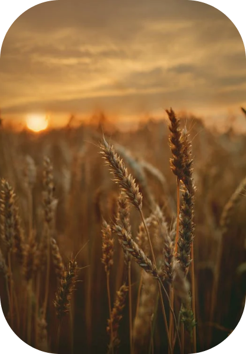

A criação ou ampliação de áreas para agricultura ou pecuária

Seja para controlar pragas e doenças, fertilizar solos ou impulsionar o crescimento de plantas, os bioinsumos são criados a partir de enzimas, extratos de plantas, microrganismos e macrorganismos. Entidades como a Embrapa (Empresa Brasileira de Pesquisa Agropecuária) estudam a criação de produtos deste tipo e também indicam como os produtores podem desenvolver o item em suas propriedades.
A substituição de defensivos químicos por bioinsumos tem se tornado uma tendência e pode ser uma das chaves para uma produção mais forte e sustentável. Além de deixar menos resíduos no solo, impactando positivamente o desenvolvimento das culturas, o produto biológico pode ajudar a reduzir gastos.